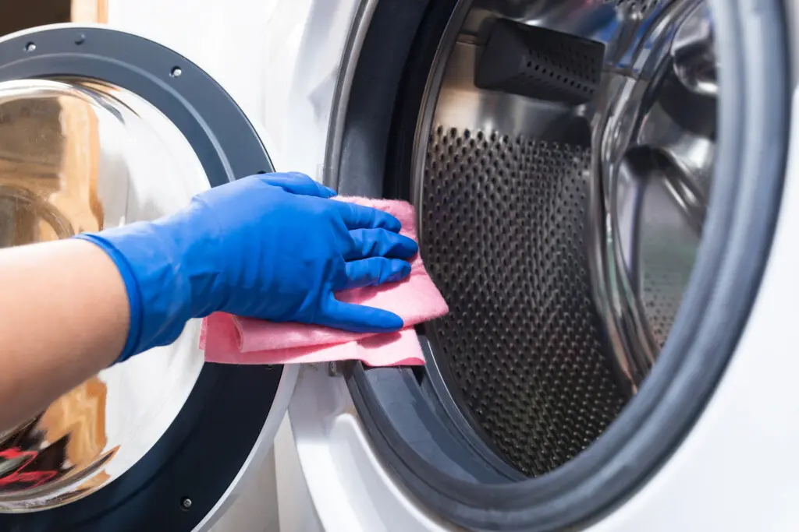

ITAMAR DUTRA - TÉCNICO EM ELETRODOMÉSTICO

Somos uma empresa familiar dedicada ao conserto e vendas de eletrodomésticos, comprometida em oferecer serviços de alta qualidade e atendimento excepcional aos nossos clientes. Com mais de 10 anos de experiência no mercado, nossa missão é proporcionar soluções eficientes e confiáveis para as necessidades de nossos clientes. Valorizamos a transparência, integridade e excelência em tudo o que fazemos, garantindo que cada cliente receba o melhor serviço possível. Estamos aqui para ajudar a manter seus eletrodomésticos funcionando perfeitamente e para fornecer soluções que atendam às suas necessidades. Conte conosco para um serviço confiável e profissional.
A higienização da máquina de lavar roupa é fundamental por várias razões:
Para manter sua máquina em bom estado, limpe-a regularmente conforme as instruções do fabricante, e deixe-a secar após cada uso, mantendo a porta aberta.
Pode ser necessário contratar um profissional para uma limpeza mais profunda da máquina. Esse serviço especializado pode remover depósitos de sujeira e resíduos difíceis de alcançar, garantindo uma limpeza completa e prolongando a vida útil do aparelho. É uma medida recomendável especialmente se a máquina apresentar sinais de mau funcionamento ou acumulação excessiva de sujeira. Recomenda-se fazer essa limpeza profunda a cada seis meses a um ano. No entanto, se você perceber sinais de mau funcionamento, como odores persistentes, resíduos visíveis ou problemas na lavagem das roupas, pode ser necessário fazer essa limpeza com mais frequência.
Marcas:
Marcas:
Marcas:
Para mais informações sobre modelos disponíveis e promoções vigentes, entre em contato conosco.